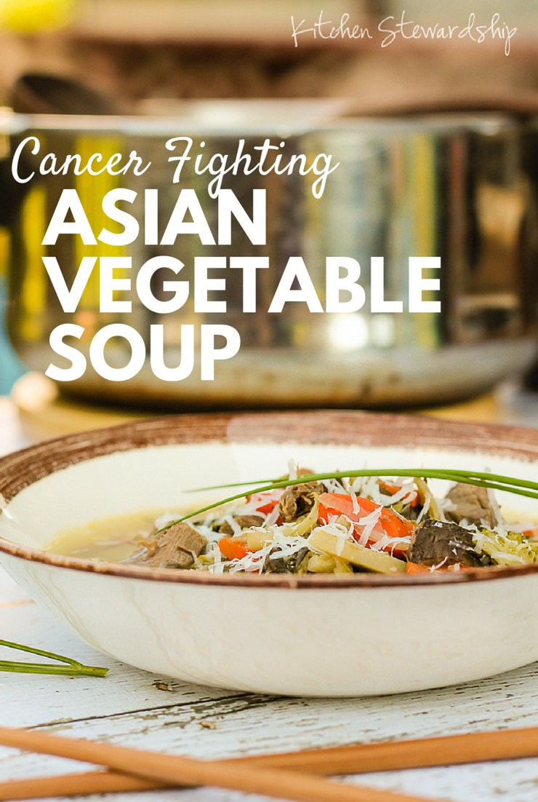

Азиската супа е рецепт кој претставува витамински микс и се препорачува да се јаде за време на хемотерапија затоа што го зајакнува имунитетот.
Состојки:
4 лажици масло
2 главици кромид, ситно исечкани
4 чешниња лук, мелени
1 главица Бокчоу (вид на кинеско зеље)
1 голема глава зелка, рендана
2 големи моркови, ситно исечкани
Корен од ѓумбир исто така рендан
1 лажица сол
1 лажица бибер
Брокула
Карфиол
